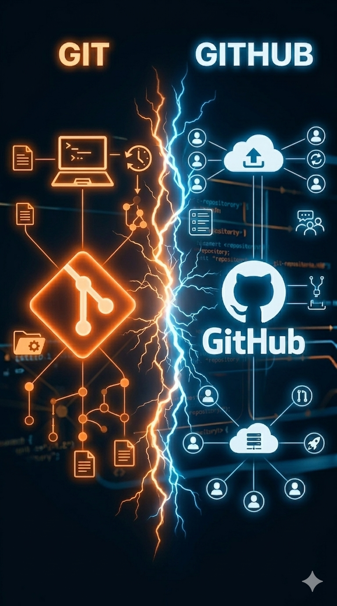

Introdução ao
Git & GitHub
Curso: Desenvolvimento Web
Módulo 1: Ferramentas e Versionamento
Carga Horária Estimada: 3:30h
Professor: Anderson Dutra
🎯 Objetivos da Aula
Compreender o que é o GitHub — entender por que ele é a plataforma mais usada no mundo para guardar e compartilhar código entre desenvolvedores.
Diferenciar Git e GitHub — entender que são ferramentas distintas: o Git é o sistema de versionamento local e o GitHub é a plataforma online.
Criar um repositório no GitHub — aprender a criar seu primeiro repo, seja pela interface web ou pela linha de comando.
Realizar commit e push — dominar o fluxo básico: git add, git commit e git push para enviar código ao GitHub.
Entender Pull e trabalho em equipe — aprender como trazer alterações remotas com git pull e como o GitHub facilita a colaboração.
O que é o
Git?
Imagine criar um jogo, um site ou um aplicativo e, depois de algumas alterações, perceber que algo parou de funcionar. Você tenta voltar atrás… mas já não lembra exatamente o que mudou. O Git resolve exatamente esse problema, registrando cada etapa da evolução do projeto como um histórico de versões.
Entendendo o Git
O Git é um sistema de controle de versão distribuído. Ele permite registrar alterações em arquivos, acompanhar o histórico do projeto e recuperar versões anteriores sempre que necessário. Em vez de sobrescrever arquivos manualmente, o Git salva "fotografias" do projeto chamadas de commits, criando uma linha do tempo completa do desenvolvimento.
Imagine um jogo que salva automaticamente seu progresso em vários pontos. Se algo der errado, você pode voltar para qualquer save anterior.
O Git funciona exatamente assim, mas para projetos de software. Cada commit representa um ponto de salvamento da aplicação.
Isso significa que você pode experimentar mudanças sem medo, porque sempre será possível retornar para uma versão estável do projeto.
Para que serve o Git?
O Git é utilizado para controlar alterações no código-fonte, organizar o fluxo de desenvolvimento e permitir que múltiplos programadores trabalhem no mesmo projeto sem perder informações importantes. Hoje ele é o padrão da indústria para versionamento.
O Git é a ferramenta responsável pelo controle de versões de um projeto. Ele registra alterações, organiza o histórico do código e permite recuperar qualquer versão anterior.
Enquanto o GitHub é uma plataforma online de hospedagem, o Git é o motor que faz todo o versionamento funcionar.
O que é o
GitHub?
Imagine que você está escrevendo um trabalho escolar em grupo. Cada pessoa edita uma cópia diferente do documento — e no final ninguém sabe qual é a versão certa. O GitHub resolve exatamente esse problema, mas para código.
Entendendo o GitHub
O GitHub é uma plataforma baseada em nuvem utilizada para hospedar repositórios Git. Ele permite armazenar código online, acompanhar alterações, colaborar em equipe e manter um histórico completo do projeto.
Pense no GitHub como um Google Drive para código, mas com superpoderes. Além de guardar seus arquivos online, ele guarda um histórico completo de todas as alterações — quem mudou o quê, quando e por quê. É como ter um "Ctrl+Z" infinito para todo o seu projeto.
Se o Google Drive salva versões automáticas de um documento, o GitHub deixa você criar versões intencionais — cada "save" é chamado de commit, e você escolhe o que salvar e escreve uma mensagem explicando a mudança.
Além disso, o GitHub permite que várias pessoas trabalhem no mesmo projeto ao mesmo tempo, sem sobrescrever o trabalho umas das outras — como um Google Docs, mas para programadores do mundo todo. 🌍
Para que serve o GitHub?
O GitHub vai muito além de apenas armazenar código online. Ele é utilizado para controlar versões de projetos, colaborar em equipe, registrar alterações, compartilhar soluções com outros desenvolvedores e até publicar aplicações na web. Atualmente, empresas do mundo inteiro utilizam o GitHub como parte fundamental do fluxo de desenvolvimento de software.
O GitHub é uma plataforma web que hospeda repositórios Git. Ele adiciona uma camada social e colaborativa ao Git — pull requests, issues, Actions (CI/CD), Pages (hospedagem), e muito mais.
Hoje, mais de 100 milhões de desenvolvedores usam o GitHub. É a maior rede social de código do mundo — e saber usá-lo é uma habilidade fundamental para qualquer programador.
Git vs
GitHub
Essa é uma das maiores dúvidas de quem está começando. Apesar de trabalharem juntos, Git e GitHub não são a mesma coisa. Um é a ferramenta de versionamento. O outro é a plataforma online que utiliza essa ferramenta.

A diferença entre Git e GitHub
O Git é responsável por controlar versões e registrar alterações no projeto. Já o GitHub funciona como uma plataforma online para armazenar, compartilhar e colaborar em repositórios Git. Em outras palavras: o Git é o motor do versionamento, enquanto o GitHub é a plataforma onde esses projetos podem ser publicados e acessados pela internet.
Pense no Git como o motor de um carro. Ele faz toda a parte técnica funcionar: registra versões, acompanha mudanças e organiza o histórico do projeto.
Já o GitHub seria uma garagem inteligente na nuvem, onde você guarda, compartilha e mostra seus projetos para outras pessoas.
Você pode usar o Git sem GitHub — mas o GitHub existe justamente para potencializar o uso do Git em equipe e na internet.
Comparando Git e GitHub
Embora estejam diretamente relacionados, Git e GitHub possuem papéis diferentes dentro do fluxo de desenvolvimento de software. A tabela abaixo resume as principais diferenças.
| Aspecto | 🛠️ Git | 🐙 GitHub |
|---|---|---|
| O que é | Software de controle de versão | Plataforma web para hospedar repositórios Git |
| Onde roda | No seu computador (local) | Na nuvem (online) |
| Quem criou | Linus Torvalds (criador do Linux) em 2005 | Tom Preston-Werner, em 2008 |
| Precisa de internet? | ❌ Não — funciona offline | ✅ Sim — é uma aplicação web |
| Interface | Linha de comando (terminal) | Interface gráfica web + terminal |
| Gratuito? | ✅ Sim, open source | ✅ Plano básico gratuito |
| Função principal | Versionar código | Compartilhar e colaborar |
| Analogia | Motor do carro 🚗 | Garagem compartilhada na nuvem ☁️ |
apt install git ou pelo site git-scm.comgit init, git add, git commit, git log....git/ do seu projetoPara usar a interface web do GitHub, não. Você pode criar repositórios, editar arquivos e até fazer commits diretamente pelo navegador, sem instalar nada.
Porém, para usar o Git via terminal (linha de comando) — que é o jeito profissional — você precisa instalar o Git no seu computador. Acesse git-scm.com e baixe para o seu sistema.
Sim! O Git pode ser usado com outras plataformas de hospedagem, como GitLab (muito usado em empresas, com CI/CD embutido) e Bitbucket (integrado ao ecossistema Atlassian — Jira, Confluence). O GitHub é o mais popular, especialmente para projetos open source.
O plano Free do GitHub é gratuito e suficiente para a maioria dos estudantes e projetos pessoais. Com ele você tem repositórios públicos e privados ilimitados, GitHub Pages (hospedagem de sites estáticos), GitHub Actions (2.000 minutos/mês de automação) e muito mais.
Os planos pagos (Pro, Team, Enterprise) adicionam recursos avançados para times e empresas.
O Git é a ferramenta responsável pelo controle de versões. O GitHub é a plataforma online que utiliza Git para armazenar e compartilhar projetos.
Eles trabalham juntos — e dominar essa dupla é um dos primeiros passos para atuar profissionalmente no desenvolvimento de software.
O Fluxo
Básico
Todo projeto utilizando Git + GitHub segue um fluxo relativamente simples. Aprender essas etapas é o primeiro passo para entender como desenvolvedores organizam alterações, salvam versões e compartilham código profissionalmente.
Entendendo o Fluxo Básico
O fluxo de trabalho com Git e GitHub segue uma sequência lógica: criar arquivos, registrar alterações, salvar versões e enviar o projeto para a nuvem. Esse processo permite acompanhar toda a evolução do sistema, organizar o desenvolvimento e colaborar com outros programadores de forma segura.
git init.# Criar uma pasta e inicializar o Git mkdir meu-projeto cd meu-projeto git init Initialized empty Git repository in /meu-projeto/.git/
git clone. Isso traz todo o histórico de commits junto.# Clonar um repositório do GitHub git clone https://github.com/usuario/repositorio.git # Entrar na pasta clonada cd repositorio
git status a qualquer momento para ver quais arquivos foram modificados, adicionados ou removidos.
git add.# Ver o que mudou git status # Adicionar TODOS os arquivos modificados git add . # Ou adicionar um arquivo específico git add index.html # Criar o commit com mensagem descritiva git commit -m "feat: adiciona página inicial"
git push. Agora o código está na nuvem e acessível para o time.# Enviar commits para o repositório remoto git push origin main # Na primeira vez, pode ser necessário: git push --set-upstream origin main
git pull para baixar e integrar essas mudanças no seu repositório local.# Baixar e integrar mudanças do repositório remoto git pull origin main # Ver o histórico de commits git log --oneline
Esse é o fluxo básico utilizado na maioria dos projetos com Git e GitHub.
Primeiro, o Git é inicializado no projeto. Em seguida, os arquivos são adicionados
à área de stage e registrados através de um commit. Depois disso, o repositório local
é conectado ao GitHub e, por fim, as alterações são enviadas para a nuvem com o
comando git push. Esse ciclo será repetido constantemente durante o
desenvolvimento de software.
# 1. Inicializar repositório git init # 2. Adicionar arquivos à área de stage git add . # 3. Fazer o commit com mensagem git commit -m "Primeiro commit" # 4. Conectar ao repositório remoto do GitHub git remote add origin https://github.com/usuario/repo.git # 5. Enviar para o GitHub git push origin main
O fluxo com Git e GitHub segue sempre a mesma lógica:
criar ou clonar um projeto, modificar arquivos, registrar alterações
com commits e sincronizar tudo com o GitHub através de
push e pull.
Pode parecer muito comando no começo, mas esse ciclo rapidamente se torna parte natural da rotina de desenvolvimento. Entender esse fluxo é essencial para trabalhar profissionalmente com projetos, equipes e versionamento de código.
Comandos Essenciais
Esses são os comandos que você vai usar todo dia. Memorize-os!
.git/ que rastreia todas as mudanças do projeto.git add . para todos os arquivos ou git add arquivo.html para um específico.git commit -m "descrição".git add.git log --oneline para uma visualização compacta e legível.# Configure seu nome (aparece nos commits) git config --global user.name "Seu Nome Aqui" # Configure seu e-mail (use o mesmo do GitHub!) git config --global user.email "seu@email.com" # Verificar a configuração atual git config --list
🌿 Branches
Uma branch (ramificação) é como uma cópia paralela do projeto onde você pode trabalhar sem afetar o código principal. É a base do trabalho em equipe no Git.
Imagine uma árvore de código. O tronco é a branch principal (main) — o código que está em produção, funcionando. Cada galho é uma branch onde um desenvolvedor trabalha numa nova funcionalidade sem mexer no tronco.
Quando o galho estiver pronto e testado, ele é mesclado de volta ao tronco com um git merge ou Pull Request. É assim que times de dezenas de devs trabalham juntos sem bagunçar o código um do outro. 🌱
# Ver todas as branches git branch # Criar nova branch git branch feature/minha-funcionalidade # Mudar para outra branch git checkout feature/minha-funcionalidade # Criar e já mudar para ela (atalho) git checkout -b feature/nova # Mesclar uma branch na main git checkout main git merge feature/minha-funcionalidade
feature/login, feature/pagamento. É criada a partir da main.fix/botao-nao-funciona. Após corrigir, faz merge de volta na main.release/v1.0.0. Usada em projetos maiores.⚠️ Erros Comuns
Todo mundo erra no começo! Aqui estão os erros mais frequentes e como resolvê-los rapidinho.
Causa: O Git não foi instalado no sistema operacional ou não está no PATH.
Solução:
# Linux (Ubuntu/Debian) sudo apt install git # macOS (via Homebrew) brew install git # Windows: baixar em git-scm.com/download/win # Verificar instalação git --version git version 2.44.0
Causa: Duas pessoas editaram a mesma linha do mesmo arquivo em branches diferentes. O Git não sabe qual versão manter.
Como resolver:
# O arquivo conflitante terá marcadores como: <<<<<<< HEAD <h1>Minha versão local</h1> ======= <h1>Versão do colega</h1> >>>>>>> feature/login # Edite o arquivo, escolha qual versão manter # Remova os marcadores <<<, ===, >>> # Depois: git add . git commit -m "fix: resolve conflito de merge"
Causa: Você tentou fazer git commit sem antes usar git add. Os arquivos modificados existem, mas nenhum foi adicionado à área de stage.
# Verificar o que está modificado mas não staged git status Changes not staged for commit: modified: index.html # Solução: adicionar primeiro, depois commitar git add . git commit -m "minha mensagem"
Causa: O repositório remoto tem commits que você não tem localmente (seu colega fez push antes de você).
# Primeiro baixe as alterações remotas git pull origin main # Resolva conflitos se existirem # Depois envie novamente git push origin main
git pull antes de começar a trabalhar e antes de fazer git push.
🏆 Desafio Prático
Chegou a hora de colocar a mão na massa! Siga os passos abaixo para completar o desafio da aula.
🎯 Missão: Publicar seu primeiro projeto no GitHub
Você vai criar uma conta no GitHub, criar um repositório e publicar um arquivo HTML. Ao final, terá seu primeiro projeto online!
joao-silva-dev) ou algo memorável. Evite underscores e números aleatórios.
meu-primeiro-projeto. Marque "Add README file". Clique em "Create repository".git clone https://github.com/SEU-USUARIO/meu-primeiro-projeto.git cd meu-primeiro-projeto
index.html na pasta do projeto com o conteúdo abaixo:<!-- Meu primeiro projeto no GitHub! --> <!DOCTYPE html> <html lang="pt-BR"> <head> <meta charset="UTF-8"> <title>Meu Projeto</title> </head> <body> <h1>🚀 Olá, GitHub!</h1> <p>Meu primeiro projeto publicado!</p> </body> </html>
git add . git commit -m "feat: adiciona index.html" git push origin main
https://SEU-USUARIO.github.io/meu-primeiro-projeto 🎉📖 Glossário
Os termos técnicos que você vai ouvir todo dia no mundo do Git e GitHub.
git add.origin.🧠 Quiz — Teste seus Conhecimentos
index.html e quer salvar essa versão no histórico do Git. Qual a sequência correta de comandos?Introdução ao HTML
-
•
O que é HTML — a linguagem de marcação que estrutura toda página web. Você vai entender por que todo site começa com um
<!DOCTYPE html>. -
•
Tags essenciais —
<h1>,<p>,<a>,<img>,<div>,<span>e muito mais. A anatomia de um elemento HTML. -
•
Estrutura de um documento HTML —
<html>,<head>,<body>e como o navegador interpreta o código que você escreve. - • Publicar no GitHub Pages — unir o que você aprendeu de Git + GitHub para publicar sua primeira página HTML online de graça. 🌐

Anderson Raulino Dutra
Desenvolvedor Web Fullstack & Professor